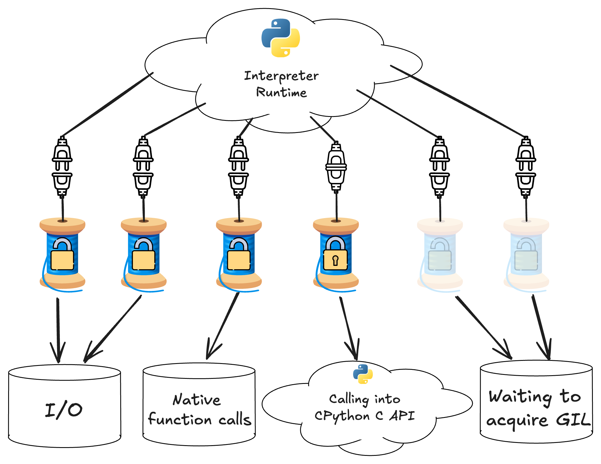
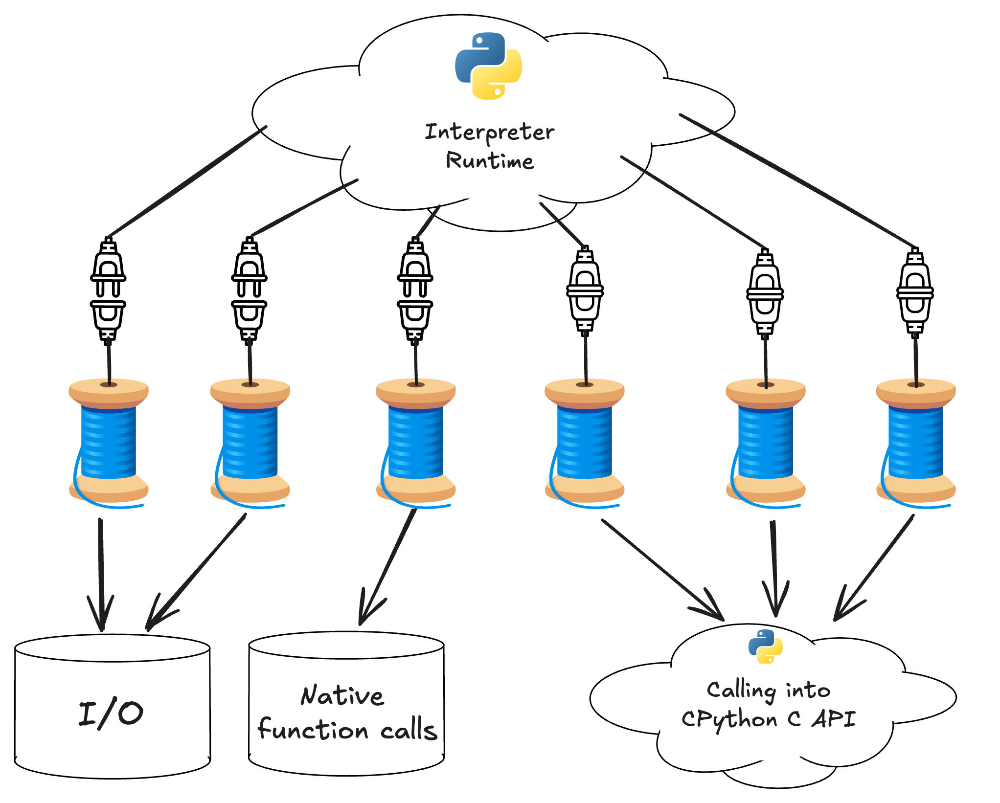
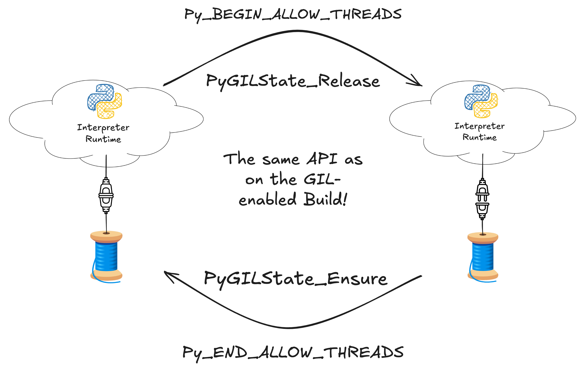

Updating Extension Modules#
Here we are going to re-hash some of the same topics covered in the previous section but with a focus on advice for updating native extension modules, particularly modules relying directly on the CPython C API. The general advice remains the same: identify supported multithreaded workflows, add testing, and fix and identified thread safety issues. We will also describe how to handle some common thread-unsafe patterns we have found in many extension modules across the open source ecosystem.
Declaring free-threaded support#
Extension modules need to explicitly indicate they support running with the GIL disabled, otherwise a warning is printed and the GIL is re-enabled at runtime after importing a module that does not support the GIL.
C or C++ extension modules using multi-phase initialization can specify the
Py_mod_gil
module slot like this:
static PyModuleDef_Slot module_slots[] = {
...
#ifdef Py_GIL_DISABLED
{Py_mod_gil, Py_MOD_GIL_NOT_USED},
#endif
{0, NULL}
};
The Py_mod_gil slot has no effect in the non-free-threaded build.
Extensions that use single-phase initialization need to call
PyUnstable_Module_SetGIL()
in the module's initialization function:
PyMODINIT_FUNC
PyInit__module(void)
{
PyObject *mod = PyModule_Create(&module);
if (mod == NULL) {
return NULL;
}
#ifdef Py_GIL_DISABLED
PyUnstable_Module_SetGIL(mod, Py_MOD_GIL_NOT_USED);
#endif
return mod;
}
See the Free threading section in the Cython user guide for detailed recommendations. Keep in mind that support for free-threaded Python in Cython code is currently considered experimental, so suggestions are subject to change.
Starting with Cython 3.1.0 extension modules written in Cython can declare
free-threaded support using the
freethreading_compatible
compiler directive.
You can do this in one of several ways, e.g., in a source file:
# cython: freethreading_compatible=True
Or by passing the directive when invoking the cython executable:
$ cython -X freethreading_compatible=True
Or via a build system specific way of passing directives to Cython.
Tip
Here are a few examples of how to globally enable the directive in a few popular build systems:
When using setuptools, you can pass the compiler_directives keyword argument
to cythonize:
from Cython.Compiler.Version import version as cython_version
from packaging.version import Version
compiler_directives = {}
if Version(cython_version) >= Version("3.1.0"):
compiler_directives["freethreading_compatible"] = True
setup(
ext_modules=cythonize(
extensions,
compiler_directives=compiler_directives,
)
)
When using Meson, you can add the directive to the cython_args you're
passing to py.extension_module:
cy = meson.get_compiler('cython')
cython_args = []
if cy.version().version_compare('>=3.1.0')
cython_args += ['-Xfreethreading_compatible=True']
endif
py.extension_module('modulename'
'source.pyx',
cython_args: cython_args,
...
)
You can also globally add the directive for all Cython extension modules:
cy = meson.get_compiler('cython')
if cy.version().version_compare('>=3.1.0')
add_project_arguments('-Xfreethreading_compatible=true', language : 'cython')
endif
C++ extension modules making use of pybind11 can easily declare support for
running with the GIL disabled via the
gil_not_used
argument to create_extension_module. Example:
#include <pybind11/pybind11.h>
namespace py = pybind11;
PYBIND11_MODULE(example, m, py::mod_gil_not_used()) {
...
}
C++ extension modules making use of nanobind can declare support for
running with the GIL disabled by passing the
FREE_THREADED
argument to the nanobind_add_module CMake target command. Example:
nanobind_add_module(
my_ext # Target name
FREE_THREADED # Opt into free-threading
my_ext.h # Source code files below
my_ext.cpp)
If you use the CPython C API in Rust via PyO3, then you can follow the PyO3 Guide section on supporting free-threaded Python. You must also update your extension to at least version 0.23.
You should write multithreaded tests of any code you expose to Python. See our guide on updating test suites for more details. You should fix any thread safety issues you discover while running multithreaded tests.
As of PyO3 0.23, PyO3 enforces Rust's borrow checking rules at
runtime and may produce runtime panics if you simultaneously mutably borrow
data in more than one thread. You may want to consider storing state in using
atomic data structures, with mutexes or locks, or behind Arc
pointers.
Once you are satisfied the Python modules defined by your rust crate are
thread safe, you can pass gil_used = false to the pymodule
macro:
#[pymodule(gil_used = false)]
fn my_module(py: Python, m: &Bound<'_, PyModule>) -> PyResult<()> {
...
}
If you define any modules procedurally by manually creating a PyModule
struct without using the pymodule macro, you can call
PyModuleMethods::gil_used
after instantiating the module.
If you use the pyo3-ffi crate and/or unsafe FFI calls to call directly into the C
API, then see the section on porting C extensions in this guide as well as
the PyO3 source code.
Starting with NumPy 2.1.0, extension modules containing f2py-wrapped
Fortran code can declare they are thread-safe and support free-threading
using the
--freethreading-compatible
command-line argument:
$ python -m numpy.f2py -c code.f -m my_module --freethreading-compatible
If you publish binaries and have downstream libraries that depend on your library, we suggest adding support as described above and uploading nightly wheels as soon as basic support for the free-threaded build is established in the development branch. This will ease the work of libraries that depend on yours to also add support for the free-threaded build.
Working with the free-threaded CPython interpreter runtime#
Many people are surprised to learn that almost all native extensions written
with the GIL-enabled build in mind compile and run with minimal changes on the
free-threaded build. They often ask questions like, "if there is no GIL, doesn't
that mean there's no need to call e.g. PyGilState_Ensure() before calling into
the C API and no need to call Py_BEGIN_ALLOW_THREADS to release the GIL before
doing I/O or a long-running computation?". Bindings generators like Cython, PyO3,
or Pybind11 all also have syntax for explicitly acquiring and releasing the
GIL. Won't all this code need to change?
The answer is no. To understand, let's first take a look at the diagram below, which illustrates a snapshot of the state of a multithreaded Python application that has native extensions.

A diagramatic snapshot of the state of a multithreaded Python application running on the GIL-enabled interpreter
In this diagram, each thread spindle symbol represents a thread that is running code inside a native extension. The lock icon indicates whether the thread holds the GIL - only one thread can acquire the GIL at a time, indicated by the fastened lock on the thread calling into the CPython C API. The bottom row of symbols indicates what work each thread is doing. You can see that even with the GIL it is possible to get multithreaded parallelism, so long as there are threads that do not have the GIL acquired and are not waiting to acquire the GIL. Usually, this means a thread is doing I/O or a long-running calculation that does not need any state or functionality from the CPython runtime.
In addition to the lock icon indicating whether the GIL is acquired, each thread icon is either plugged in or unplugged from the interpreter runtime, indicating it has an attached or detached thread state. In the GIL-enabled build, only one thread can have an attached thread state and hold the GIL, while all other unplugged threads wait for the GIL to be released.
In the free-threaded build the GIL is disabled but threads can still either have attached or detached thread states. As in the GIL-enabled build, only attached threads can use interpreter state but, because there is no GIL, many threads can simultaneously call into the CPython C API.
The state of a running free-threaded application is illustrated in the diagram below.

A diagramatic snapshot of the state of a multithreaded Python application running on the free-threaded-enabled interpreter
In the free-threaded build, the GIL is disabled, so this diagram doesn't have lock icons. Because there is no GIL, threads do not need to wait to acquire it, and multiple threads can simultaneously call into the CPython C API.
The icons indicating whether threads are attached or detached are still present. As discussed above, this is because it is still necessary to explicitly attach and detach from the runtime in the free-threaded build, despite the fact that there isn't a GIL.
You might wonder why it's still necessary to detach from the runtime when doing I/O or a long-running native calculation. This is because there are still times when the interpreter needs to globally synchronize the state of all threads. For example, the free-threaded interpreter uses a stop-the-world garbage collection scheme, which requires all threads to be detached from the runtime before it can start. If you don't explicitly detach before doing a long-running operation that does not require the runtime, the interpreter may be blocked on running the garbage collector or doing any other operation that requires a globally consistent view of all threads.

Attaching and detaching from the runtime uses the same code as in the GIL-enabled build
As illustrated above, attaching and detaching from the runtime uses exactly the
same code in the free-threaded build as is used in the GIL-enabled build to
acquire and release the GIL. It is an unfortunate naming issue that
PyGILState_Ensure and PyGILState_Release has "GIL" in the name of the
function, despite the lack of a GIL on the free-threaded build. It's likely that
the C API in future Python version will fix this naming issue.
Hopefully you now have a better mental model for how native code interacts with the CPython interpreter runtime in the free-threaded build and how it is similar to what happens on the GIL-enabled build, and what exactly it means for multiple threads to simultaneously execute Python code.
You might also see how extension modules written assuming that Python can call into the extension in one thread at a time might lead to problematic thread-unsafe behavior. Doubly so now that more than one Python thread can simultaneously access any state stored in the extension in the free-threaded build.
Porting C Extensions#
The CPython C API exposes the Py_GIL_DISABLED macro in the free-threaded
build. You can use it to enable low-level code that only runs under the
free-threaded build, isolating possibly performance-impacting changes to the
free-threaded build:
#ifdef Py_GIL_DISABLED
// free-threaded specific code goes here
#endif
#ifndef Py_GIL_DISABLED
// code for gil-enabled builds goes here
#endif
Locking and Synchronization Primitives#
Native mutexes#
If your extension is written in C++, Rust, or another modern language that exposes locking primitives in the standard library, you should consider using the locking primitives provided by your language or framework to add locks when needed.
If you need to call arbitrary Python code while the lock is held, care should be taken to avoid creating deadlocks with the GIL on the GIL-enabled build.
PyMutex#
For C code or C-like C++ code, the CPython 3.13 C API exposes
PyMutex, a
high-performance locking primitive that supports static allocation. As of
CPython 3.13, the mutex requires only one byte for storage, but future versions
of CPython may change that, so you should not rely on the size of PyMutex in
your code.
You can use PyMutex in both the free-threaded and GIL-enabled build of Python
3.13 or newer. PyMutex is hooked into the CPython runtime, so that if a thread
tries to acquire the mutex and ends up blocked, garbage collection can still
proceed and, in the GIL-enabled build, the blocked thread releases the GIL,
allowing other threads to continue running. This implies that it is impossible
to create a deadlock between a PyMutex and the GIL. For this reason, it is not
necessary to add code for the GIL-enabled build to ensure the GIL is released
before acquiring a PyMutex. If you do not call into the CPython C API while
holding the lock, PyMutex has no special advantages over other mutexes, besides
low-level details like performance or the size of the mutex object in memory.
See the section on dealing with thread-unsafe low-level libraries below for an example using PyMutex to lock around a thread-unsafe C library.
Critical Sections#
Python 3.13 or newer also offers a critical section API that is useful for locking either a single object or a pair of objects during a low-level operation. The critical section API is intended to provide weaker, but still useful locking guarantees compared to directly locking access to an object using a mutex. This provides similar guarantees to the GIL and avoids the risk of deadlocks introduced by locking individual objects.
The main difference compared with using a per-object lock is that active
critical sections are suspended if a thread calls PyEval_SaveThread (e.g. when
the GIL is released on the GIL-enabled build), and then restored when the thread
calls PyEval_RestoreThread (e.g. when the GIL is re-acquired on the
GIL-enabled build). This means that while the critical sections are suspended,
it's possible for any thread to re-acquire a thread state and mutate the locked
object. This can also happen with the GIL, since the GIL is a re-entrant lock,
and extensions are allowed to recursively release and acquire it in an
interleaved manner.
Critical sections are most useful when implementing the low-level internals of a custom object that you fully control. You can apply critical sections around modification of internal state to effectively serialize access to that state.
See the section below on dealing with thread-unsafe objects for an example using the critical section API.
Dealing with global state#
Many CPython C extensions make strong assumptions about the GIL. For example, before NumPy 2.1.0, the C code in NumPy made extensive use of C static global variables for storing settings, state, and caches. With the GIL, it is possible for Python threads to produce non-deterministic results from a calculation, but it is not possible for two C threads to simultaneously see the state of the C global variables, so no data races are possible.
In free-threaded Python, global state like this is no longer safe against data
races and undefined behavior in C code. A cache of PyObject pointers stored in
a C global array can be overwritten simultaneously by multiple Python threads,
leading to memory corruption and segfaults.
Converting global state to thread local-state#
Often the easiest way to fix data races due to global state is to convert the global state to thread local state.
Python and Cython code can make use of
threading.local
to declare a thread-local Python object. C and C++ code can also use the
Py_tss API
to store thread-local Python object references. PEP
539 has more details about the Py_tss API.
Low-level C or C++ code can make use of the
thread_local storage
specified by recent standard versions. Note that standardization of
thread-local storage in C has been slower than C++, so you may need to use
platform-specific definitions to declare variables with thread-local
storage. Also note that thread-local storage on MSVC has
caveats,
and you should not use thread-local storage for anything besides statically
defined integers and pointers.
NumPy has a NPY_TLS
macro
in the numpy/npy_common.h header. While you can include the numpy header and
use NPY_TLS directly on NumPy 2.1 or newer, you can also add the definition
to your own codebase, along with some build configuration tests to test for the
correct definition to use.
Making global caches thread-safe#
Global caches are also a common source of thread safety issues. For example, if a function requires an expensive intermediate result that only needs to be calculated once, many C extensions store the result in a global variable. This can lead to data races and memory corruption if more than one thread simultaneously tries to fill the cache.
If the cache is not critical for performance, consider simply disabling the cache in the free-threaded build:
static int *cache = NULL;
int my_function_with_a_cache(void) {
int *my_cache = NULL;
#ifndef Py_GIL_DISABLED
if (cache == NULL) {
cache = get_expensive_result();
}
my_cache = cache;
#else
my_cache = get_expensive_result();
#endif;
// use the cache
}
CPython holds a per-module lock during import. This lock can be released to
avoid deadlocks in unusual cases, but in most situations module initialization
happens exactly once per interpreter in one C thread. Modules using static
single-phase initialization can therefore set up per-module state in the
PyInit function without worrying about concurrent initialization of modules in
different threads. For example, you might set up a global static cache that is
read-only after module initialization like this:
static int *cache = NULL;
PyMODINIT_FUNC
PyInit__module(void)
{
PyObject *mod = PyModule_Create(&module);
if (mod == NULL) {
return NULL;
}
// don't need to lock or do anything special
cache = setup_cache();
// do rest of initialization
}
You can then read from cache at runtime in a context where you know the module
is initialized without worrying about whether or not the per-module static cache
is initialized.
If the cache is critical for performance, cannot be generated at import time,
but generally gets filled quickly after a program begins, then you will need to
use a single-initialization API to ensure the cache is only ever initialized
once. In C++, use
std::once_flag or
std::call_once.
C does not have an equivalent portable API for single initialization. If you need that, take a look at this NumPy PR for an example using atomic operations and a global mutex.
If the cache is in the form of a data container, then you can lock access to the container, like in the following example:
#ifdef Py_GIL_DISABLED
static PyMutex cache_lock = {0};
#define LOCK() PyMutex_Lock(&cache_lock)
#define UNLOCK() PyMutex_Unlock(&cache_lock)
#else
#define LOCK()
#define UNLOCK()
#endif
static int *cache = NULL;
static PyObject *global_table = NULL;
int initialize_table(void) {
// called during module initialization
global_table = PyDict_New();
return;
}
int function_accessing_the_cache(void) {
LOCK();
// use the cache
UNLOCK();
}
Note
Note that, while the NumPy PR linked above uses PyThread_type_lock, that is
only because PyMutex was not part of the public Python C API at the time. We
recommend always using PyMutex. For pointers on how to do that, check
this NumPy PR that ports all
PyThread_type_lock usages to PyMutex.
Dealing with thread-unsafe native libraries#
Many C, C++, and Fortran libraries are not written in a thread-safe manner. It is still possible to call these libraries from free-threaded Python, but wrappers must add appropriate locks to prevent undefined behavior.
There are two kinds of thread unsafe libraries: reentrant and non-reentrant. A reentrant library generally will expose state as a struct that must be passed to library functions. So long as the state struct is not shared between threads, functions in the library can be safely executed simultaneously.
Wrapping reentrant libraries requires adding locking whenever the state struct is accessed.
typedef struct lib_state_struct {
low_level_library_state *state;
PyMutex lock;
} lib_state_struct;
int call_library_function(lib_state_struct *lib_state) {
PyMutex_Lock(&lib_state->lock);
library_function(lib_state->state);
PyMutex_Unlock(&lib_state->lock)
}
int call_another_library_function(lib_state_struct *lib_state) {
PyMutex_Lock(&lib_state->lock);
another_library_function(lib_state->state);
PyMutex_Unlock(&lib_state->lock)
}
With this setup, if two threads call library_function and
another_library_functions simultaneously, one thread will block until the
other thread finishes, preventing concurrent access to lib_state->state.
Non-reentrant libraries provide an even weaker guarantee: threads cannot call library functions simultaneously without causing undefined behavior. Generally this is due to use of global static state in the library. This means that non-reentrant libraries require a global lock:
static PyMutex global_lock = {0};
int call_library_function(int *argument) {
PyMutex_Lock(&global_lock);
library_function(argument);
PyMutex_Unlock(&global_lock);
}
Any other wrapped function needs similar locking around each call into the library.
Dealing with thread-unsafe objects#
Similar to the section above, objects may need locking or atomics if they can be concurrently modified from multiple threads. CPython 3.13 exposes a public C API that allows users to use the built-in per-object locks.
For example the following code:
int do_modification(MyObject *obj) {
return modification_on_obj(obj);
}
Should be transformed to:
int do_modification(MyObject *obj) {
int res;
Py_BEGIN_CRITICAL_SECTION(obj);
res = modification_on_obj(obj);
Py_END_CRITICAL_SECTION(obj);
return res;
}
A variant for locking two objects at once is also available. For more information
about Py_BEGIN_CRITICAL_SECTION, please see the
Python C API documentation on critical sections.
Lock-free concurrent programming with atomics#
While a mutex offers a convenient API that ensures safe access, mutexes are also blocking operations that might lead to contention if many threads compete to acquire the mutex. Modern CPUs, operating systems, and programming languages support a memory model that allows programmers to reason about multithreaded access to resources at the hardware level. Correctly-written programs can ensure sequentially consistent access and mutation for data that is simultaneously accessed by many threads. While the possibility of doing such a thing is appealing, it is also technically fraught and easy to write incorrect code using atomics, even in a memory-safe language like Rust.
The author of this guide recommends "Rust Atomics and Locks" by Mara Bos as an introduction to lock-free concurrent programming. While the book does use examples written in Rust, Rust also shares the same memory model used in modern revisions of the C and C++ standard library. Rust also has a convenient API for working with atomics that can be obscured by the more tricky APIs the C and C++ standard libraries expose. "C++ Concurrency in Action" may also be a resource for those who are more familiar with C or C++ syntax.
The C++ and Rust standard libraries both have widely-supported built-in support for atomics. If your extension is written in C++ or Rust we encourage you to use the standard library.
If you are updating an existing C library and would like to use atomic
operations, then we recommend using C standard library atomics. Recent versions
of both GCC and LLVM support C17 atomics. MSVC does not officially support C
atomics yet, but it is possible to enable experimental support for atomics using
the /experimental:c11atomics compiler flag in recent versions.
We also strongly recommend testing code that makes use of atomics under Thread Sanitizer on more than one CPU architecture, particularly CPU architectures that support weak ordering, like ARM CPUs. Certain kinds of thread safety issues can only happen on ARM CPUs due to slightly different memory semantics. Thread Sanitizer also has runtime options that can help determine whether a bug is happening due to incorrect use of atomic operations.
For a worked example of how to enable atomics in a real-world project, see [PR
2020](https://github.com/nedbat/coveragepy/pull/2020/files) in the#
coveragepy project, which enabled a lock-free boolean using atomic operations.
Cython thread safety#
See the free-threading section in the Cython user guide for recommendations from the Cython developers. In particular, see the recommendations about thread safety and the opinionated suggestions for how to deal with thread safety in Cython extensions. At the time of writing, Cython does not automatically ensure any significant level of thread safety, so it is up to the author of a Cython extension to add locking or make use of critical sections as needed to ensure thread safety.
It is normal for an extension to build without modification using Cython 3.1.0 or newer, but keep in mind that building or running without crashing does not imply that code will also be thread-safe and deterministic when used in a multithreaded context.
CPython C API usage#
In the free-threaded build it is possible for the reference count of an object to change "underneath" a running thread when it is mutated by another thread. This means that many APIs that assume reference counts cannot be updated by another thread while it is running are no longer thread-safe. In particular, C code returning "borrowed" references to Python objects in mutable containers like lists may introduce thread safety issues. A borrowed reference happens when a C API function does not increment the reference count of a Python object before returning the object to the caller. "New" references are safe to use until the owning thread releases the reference, as in non free-threaded code.
Most direct uses of the CPython C API are thread-safe. There is no need to add locking for scenarios that should be bugs in CPython. You can assume, for example, that the initializer for a Python object can only be called by one thread and the C-level implementation of a Python function can only be called on one thread. Accessing the arguments of a Python function is thread-safe no matter what C API constructs are used and no matter whether the reference is borrowed or owned because two threads can't simultaneously call the same function with the same arguments from the same Python-level context. Of course it's possible to implement argument parsing in a thread-unsafe manner using thread-unsafe C or C++ constructs, but it's not possible to do so using the CPython C API.
Unsafe APIs returning borrowed references#
The PyDict and PyList APIs contain many functions returning borrowed
references to items in dicts and lists. Since these containers are mutable,
it's possible for another thread to delete the item from the container, leading
to the item being de-allocated while the borrowed reference is still
"alive". Even code like this:
PyObject *item = Py_NewRef(PyList_GetItem(list_object, 0))
Is not thread-safe, because in principle it's possible for the list item to be
de-allocated before Py_NewRef gets a chance to increment the reference count.
For that reason, you should inspect Python C API code to look for patterns
where a borrowed reference is returned to a shared, mutable data structure, and
replace uses of APIs like PyList_GetItem with APIs exposed by the CPython C
API returning strong references like PyList_GetItemRef. Not all usages are
problematic (see above) and we do not currently suggest converting all usages of
possibly unsafe APIs returning borrowed references to return new reference. This
would introduce unnecessary reference count churn in situations that are
thread-safe by construction and also likely introduce new reference counting
bugs in C or C++ code using the C API directly. However, many usages are
unsafe, and maintaining a borrowed reference to an objects that could be exposed
to another thread is unsafe.
A good starting place to find instances of this would be to look for usages of the unsafe borrowed reference APIs mentioned in the free-threading compatibility docs.
Adopt pythoncapi-compat to use new C API functions#
Rather than maintaining compatibility shims to use functions added to the C API
for Python 3.13 like PyList_GetItemRef while maintaining compatibility with
earlier Python versions, we suggest adopting the
pythoncapi-compat project as a
build-time dependency. This is a header-only library that can be vendored as
e.g. a git submodule and included to expose shims for C API functions on older
versions of Python that do not have implementations.
Some low-level APIs don't enforce locking#
Some low-level functions like PyList_SET_ITEM and PyTuple_SET_ITEM do not
do any internal locking and should only be used to build newly created
values. Do not use them to modify existing containers in the free-threaded
build.
Limited API support#
The free-threaded build does not support the limited CPython C API. If you
currently use the limited API to build wheels that do not depend on a specific
Python version, you will not be able to use it while shipping binaries for the
free-threaded build. In practice, the limited API is a subset of the full C API,
so your extension will build, you just cannot set Py_LIMITED_API at build
time. This also means that code inside #ifdef Py_GIL_DISABLED checks can use C
API constructs outside the limited API if you would like to do that, although
these uses will need to be removed once the free-threaded build gains support
for compiling with the limited API.
Dependencies that don't support free-threading#
See our guidance for handling dependencies that don't support free-threading.